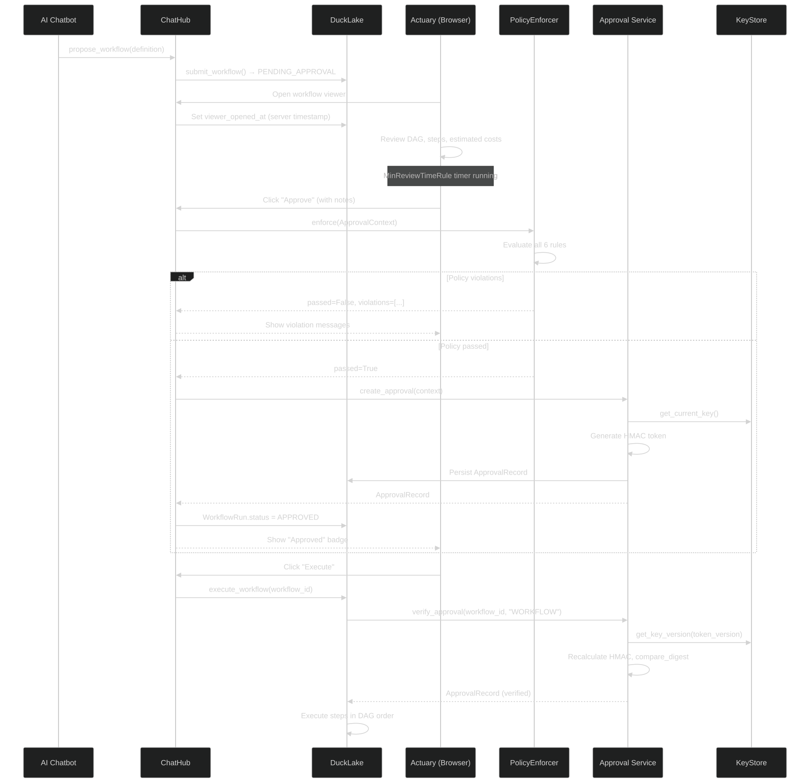

The VaultDB approval engine provides cryptographically verified human approvals for any action in the KRONOS Re platform. It enforces the BMA (Bermuda Monetary Authority) mandate that AI-proposed actions require a verified human signature before execution.

The approval system is strictly separated into three layers:
| Layer | File | Responsibility |
|---|---|---|
| Policy | policy.py |
Determines IF an approval is allowed (rules evaluation) |
| Service | service.py |
Creates and verifies approval records (HMAC + CRUD) |
| Key Store | key_store.py |
Manages versioned key material (env / AWS Secrets Manager) |
Critical design rule: service.py contains ZERO policy logic. It is called only after PolicyEnforcer.enforce() returns passed=True.
Immutable record of one human approval. Never modified after creation except for revocation fields.
| Field | Type | Description |
|---|---|---|
approval_id |
Text (PK) | UUID |
subject_id |
Text | What is being approved (e.g., workflow_id) |
subject_type |
Text | Category: WORKFLOW, REPORT, TRADE, ASSUMPTION_SET, DATA_BATCH, POLICY |
subject_name |
Text | Human-readable name |
approver_id |
Text | OIDC subject identifier |
approver_email |
Text | From OIDC claims |
approver_name |
Text | Display name typed by user |
approver_roles |
JSON | OIDC roles/groups at approval time |
session_id |
Text | Session identifier |
ip_address |
Text | Client IP |
user_agent |
Text | Browser user-agent |
submitter_id |
Text | Who created the subject (for self-approval check) |
approved_at |
DateTime | UTC timestamp |
notes |
Text | Reviewer's notes |
token |
Text | "v{key_version}:{hmac_hex}" — cryptographic signature |
key_version |
Integer | Which key was used (rotation support) |
is_valid |
Boolean | False if revoked |
revoked_by |
Text | Who revoked |
revoked_at |
DateTime | When revoked |
revoked_reason |
Text | Why revoked |
Security note: to_dict() only exposes the last 8 characters of the token (token_suffix). The full token is never sent to clients.
Configures which rules apply to each subject_type. If no row exists, an open policy applies (any authenticated user may approve).
| Field | Type | Rule It Activates |
|---|---|---|
required_approver_roles |
JSON | RequiredRolesRule |
require_notes |
Boolean | RequireNotesRule |
min_review_seconds |
Integer | MinReviewTimeRule |
no_self_approval |
Boolean | NoSelfApprovalRule |
expiry_hours |
Integer | ExpiryRule |
v{key_version}:{hmac_sha256_hex}
Example: v3:a1b2c3d4e5f6...
The version prefix allows verification after key rotation — old tokens remain verifiable using the key version that created them.
The HMAC message is constructed by pipe-separating six fields:
{approval_id}|{subject_id}|{subject_type}|{approver_id}|{approver_email}|{approved_at_iso}
This binds the token cryptographically to the specific approval, subject, approver identity, and timestamp.

# 1. Parse version from token prefix
"v3:a1b2c3..." → version=3, mac="a1b2c3..."
# 2. Load key for that version
key_bytes = KeyStore.get_key_version(3)
# 3. Recompute HMAC with same canonical message
expected = hmac.new(key_bytes, message, sha256).hexdigest()
# 4. Constant-time comparison (timing-attack safe)
hmac.compare_digest(expected, mac)
| Environment | Source | Format |
|---|---|---|
| Dev / CI | Environment variables | APPROVAL_SECRET_CURRENT=3, APPROVAL_SECRET_V1=<hex>, APPROVAL_SECRET_V2=<hex>, APPROVAL_SECRET_V3=<hex> |
| Production | AWS Secrets Manager | JSON: {"current_version": 3, "keys": {"1": "<hex>", "2": "<hex>", "3": "<hex>"}} |
| Legacy | Single env var | WORKFLOW_APPROVAL_SECRET=<string> (maps to version 1) |
current_version: 4.The KeyStore uses a thread-safe TTL cache (_KeyCache) with a 300-second TTL to avoid hammering AWS Secrets Manager on every verification.
All data available at approval request time, passed to every rule:
@dataclass
class ApprovalContext:
subject_id: str
subject_type: str
subject_name: str
approver_id: str # OIDC sub
approver_email: str # OIDC claims
approver_name: str # Typed by user
approver_roles: list[str] # OIDC roles/groups
submitter_id: str | None # Who created the subject
notes: str
request_time: datetime # When approval POST arrived (UTC)
viewer_opened_at: datetime | None # Server-set, unforgeable
ip_address: str
session_id: str
user_agent: str
All 6 rules are evaluated independently. A broken rule is treated as a violation (fail-closed).

| Rule | Code | Activation | Description |
|---|---|---|---|
| RequiredRolesRule | INSUFFICIENT_ROLE |
required_approver_roles non-empty |
Approver must hold at least one required role |
| RequireNotesRule | NOTES_REQUIRED |
require_notes=True |
Notes field must be non-empty |
| MinReviewTimeRule | VIEWER_NOT_OPENED / REVIEW_TIME_INSUFFICIENT |
min_review_seconds > 0 |
Approver must spend N seconds on viewer page. viewer_opened_at is server-set and unforgeable. |
| NoSelfApprovalRule | SELF_APPROVAL_FORBIDDEN |
no_self_approval=True |
Approver cannot be the person who submitted the subject |
| ExpiryRule | ALREADY_APPROVED |
expiry_hours > 0 |
Prevents re-approval if valid approval already exists |
| SingleApproverRule | DUPLICATE_APPROVAL |
Always active | Same approver cannot approve same subject twice without revoking |
New rules are added by writing one class that extends PolicyRule:
class MyCustomRule(PolicyRule):
def check(self, policy, context: ApprovalContext) -> list[PolicyViolation]:
if some_condition:
return [PolicyViolation(
rule=self.name,
code="MY_VIOLATION",
message="Human-readable explanation",
)]
return []
# Register:
enforcer = PolicyEnforcer(extra_rules=[MyCustomRule()])
| Function | Purpose |
|---|---|
create_approval(...) |
Generate HMAC token, persist ApprovalRecord |
verify_approval(subject_id, subject_type) |
Full cryptographic verification (used by execute_workflow) |
find_valid_approval(subject_id, subject_type) |
DB lookup for most recent valid approval |
revoke_approval(subject_id, revoked_by, reason) |
Mark approval as invalid |
get_audit_trail(subject_id, subject_type, approver_id, since) |
Query approval history |
